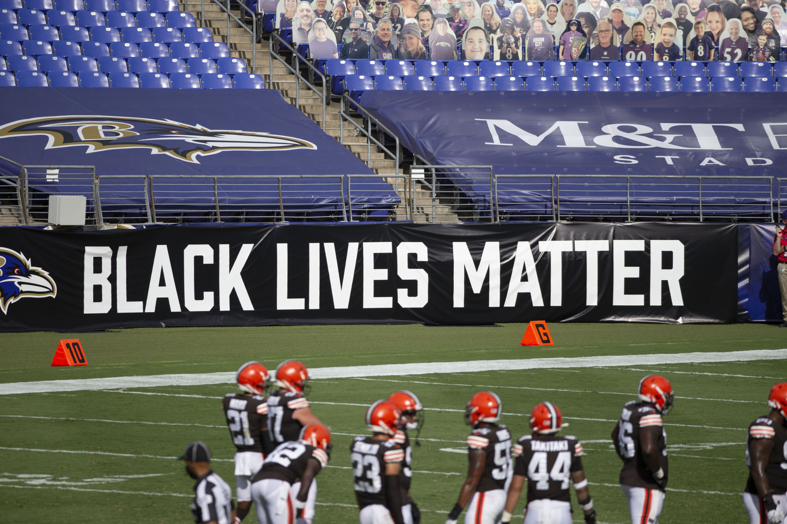
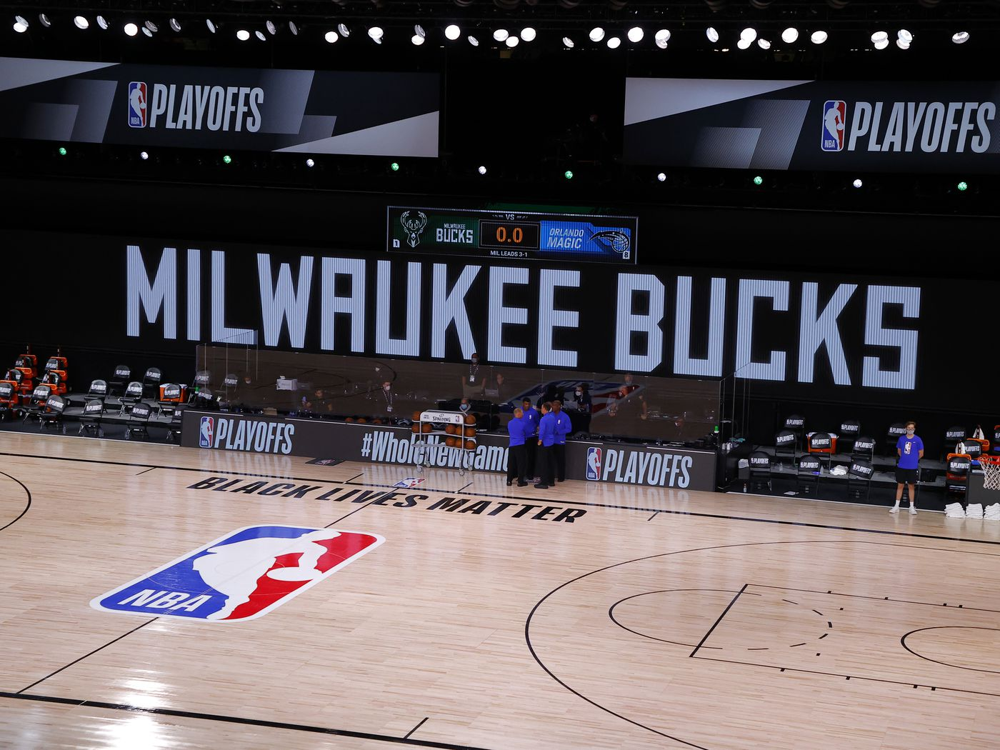
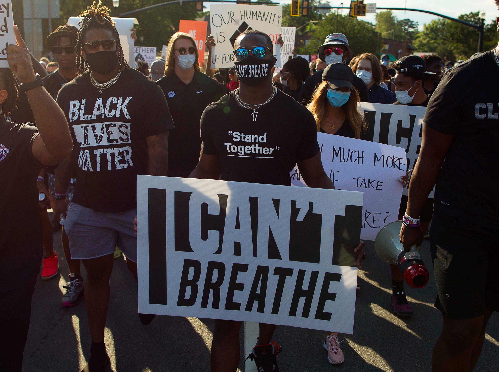

The Athletes Have More to Say
Of all the moments of the 2019–20 NBA season — the one with Rudy Gobert touching all the mics and the pandemic and the bubble and another Lakers championship — the most lasting one, the most important one, came when the Milwaukee Bucks, in the wake of the shooting of Jacob Blake by police in Kenosha, Wisconsin, elected unanimously not to play their playoff game against the Orlando Magic in order to call for justice for Blake and for the officers to “be held accountable.” It led to the postponement of two days’ worth of NBA playoff games, as well as games in Major League Baseball, the WNBA, and the MLS. It was something that had always been whispered about but not actually seen in sports in generations: Players recognizing the power of their voices — and simply refusing to play.
It wasn’t just a gesture. The walkout effected actual change: The NBA quickly came to an agreement with players to expand voting-rights efforts and eventually led to 23 of the league’s 30 arenas being used as polling places and early-voting stations — moves that many believe directly led to increased turnout in cities like Philadelphia, Detroit, and Atlanta that helped decide November’s presidential election. That doesn’t happen without the boycott. That doesn’t happen without the biggest social-activism movement in the history of American professional sports. And it could be the start of something even larger, and lasting.
For decades, sports has been a place for many to hide from politics, or from the outside world entirely. Because of that, and the tendency of leagues and networks to sprint away from anything that may make any corporate sponsors and white billionaire owners nervous, the world of sports has been notoriously hesitant to wade into the world of politics. The age of Black activist athletes like Jim Brown and Muhammad Ali and Kareem Abdul-Jabbar had been displaced, or even co-opted, by capitalism and an ethos of not rocking the boat. None other than Michael Jordan himself set that tone with his infamous “Republicans buy shoes too” comment.
These attitudes began to change in recent years as sports succumbed to the same reality every other American institution did in the age of Trump: Politics is everywhere and everything, and eventually, the culture war will find you. After Colin Kaepernick was blackballed from the NFL for kneeling to protest social injustice and police brutality, and President Trump called athletes who followed his example “sons of bitches,” it became obvious that sports were just another political playing field — and now athletes could play there too. Emblematic of this seismic shift and the idea of athletes embracing political activism is the rise of More Than a Vote, the voter-rights organization started by LeBron James. In the space of a year, guided by a smart team of veteran political operatives, it went from being another project on LeBron’s ever-expanding spreadsheet to an organization that helped register tens of thousands of Black voters, some of whom may have helped swing the presidential election and January’s Senate runoffs in Georgia.
“That single moment with the Bucks was a perfect microcosm of the climate that created More Than a Vote,” says Michael Tyler, the organization’s executive VP of public affairs and talent relations. “They were fed up with injustice, spoke out on their own terms, and came together to wield their power to benefit the communities they represent in a tangible way.”
Tyler is a DNC veteran who worked on Cory Booker’s presidential campaign until it flamed out last January. Soon after, he was approached by Addisu Demissie, who had run Booker’s campaign as well as Gavin Newsom’s successful run for California governor in 2018. Demissie had just met with LeBron and his longtime partners Maverick Carter and Adam Mendelsohn about potentially heading up a political organization as another arm of the ever-growing James empire — and he had come away impressed.
“I realized that they were dead set on the issues that have been the passions of mine my entire career,” Demissie told me. “Voting, racial justice, and the intersection of the two. They really wanted to get their hands dirty and do the real work.” He agreed to become executive director of the new organization, then brought in Tyler. Both say they quickly realized More Than a Vote wasn’t going to be some half-baked vanity project or, as Tyler had initially worried, an effort where they “throw a couple athletes on TV once or twice a week, do a quick five-minute interview about why voting is important, and then move on.”
“The goal was more than that,” Tyler says.
“There was recognition that there really wasn’t a place for athletes to do things oriented around the campaign."
Demissie also hired former DNC political director Jonae Wartel while staffing up the organization, and though the pandemic threw a wrench into everybody’s plans — Tyler admits most of the staff still hasn’t ever met in person — the organization looked primed to be a substantial, if not key, advocate for voting rights and racial-justice issues ahead of what promised to be one of the most tumultuous presidential elections in American history.
Then George Floyd was killed. His horrifying death on May 25 at the hands of Minneapolis police officer Derek Chauvin, soon watched by millions on their cell phones, catalyzed a historic movement in the U.S. whose effects will likely reverberate for generations. It also gave More Than a Vote — and LeBron James, its leader and public figurehead — a clear and direct purpose.
“Initially, [More Than a Vote] really was just meant to be a way for us to just give the athletes a new way to think about the campaign,” says Mendelsohn, LeBron’s longtime adviser.
“There was recognition that there really wasn’t a place for athletes to do things oriented around the campaign,” he says. “They could do things with political organizations, but that wasn’t necessarily a natural and authentic way for an athlete to engage, so could we create something?”
“Then George Floyd was murdered. LeBron was very angry, very frustrated, and asked us, ‘What are we doing? What is our response to this?’ We decided More Than a Vote would be the vessel [and it quickly] became much more pointed and much more focused in its mission. It became something that was more activist because that’s what LeBron wanted it to be.”
Suddenly, LeBron — who had hardly been a political wallflower; he had campaigned for Hillary Clinton, had worked with Newsom to push for the Fair Pay to Play Act (which allowed collegiate athletes to earn endorsement money), had famously called Trump a “bum,” and been told to “shut up and dribble” by Laura Ingraham — had his movement.
More Than a Vote and LeBron donated money to the Florida Rights Restoration Coalition to help felons pay off fines so they could vote, and even got Michael Jordan to play a part. The organization pushed for the opening of those sports arenas for voting and worked with President Obama (who promoted the effort by virtually showing up at Game One of the NBA Finals) to sign up poll workers, adding more than 40,000 in many low-income and majority Black neighborhoods. (An analyst at Catalist, a voter-database analytics organization, told me the poll-worker initiative might be the organization’s biggest success.) The organization pushed a get-out-the-vote message across multiple platforms, including episodes about fighting misinformation on the NBA2K video game and signing up Desus and Mero to do instructional (and hilarious) videos on how to avoid messaging meant to keep voters from the polls.
More Than a Vote also became, almost instantly, the place for athletes to channel their own frustrations and anger, like LeBron had, into something productive. The roster of athletes under the More Than a Vote banner is vast and impressive — it includes Damian Lillard, Jozy Altidore, Lisa Leslie, Maria Taylor, Patrick Mahomes, CC Sabathia, Sloane Stephens, Brittney Griner, and Odell Beckham Jr. And they were very eager to be, and get others, involved.
“It wasn’t just LeBron,” Demissie says. “LeBron would call athlete X, and athlete X would call athlete Y. Next thing you know I’m on a Zoom with 25 of the most prominent Black athletes in the country, talking about getting this thing off the ground and engaging them in this moment.”
Demissie began immediately deploying the athletes. Former quarterback Michael Vick, who served 21 months in federal prison after pleading guilty to felony charges over running a dog-fighting ring, made a series of videos chronicling his journey to restore his voting rights as a way to show others how to do so. Cardinals pitcher Jack Flaherty fought a (ultimately unsuccessful) battle to make Busch Stadium an early-voting site. Lillard and Beckham starred in an animated video about making a voting game plan. WNBA star Renee Montgomery even made a prescient video reminding people that it would take a while to count absentee votes. And at the center of all of it was fighting voter suppression in Black communities.
The organization even partnered with the NBA itself, which amplified its social-media posts via the league’s official accounts and promoted the organization on its playoff broadcasts. More Than a Vote went from not existing at the beginning of 2020 to suddenly being everywhere.
Data analysts, including those at Catalist, are still debating what effect the increase in Black voter turnout had in the general election last November. More Than a Vote’s largest political impact may have come two months later. Jonae Wartel, a native Georgian who helped run Jon Ossoff’s first congressional campaign, took a leave from the organization in December to serve as the runoff director for the Georgia Democrats. In the state’s critical runoffs, Black turnout was widely considered decisive, and she credits the work of organizations like Fair Fight, the New Georgia Project, and More Than a Vote with paving the way. “We laid down the foundation in November, finding out what worked and what didn’t,” she told me, and believes those lessons paid off in January when Democrats Ossoff and Raphael Warnock were elected to the Senate. The most politically active year in sports history had ended, amazingly, in success.
More Than a Vote’s leaders emphasize that the battle is far from over, and that it will concentrate its energy on fighting voter-suppression efforts across the country, particularly the ones already under way in the Georgia state legislature. But it is also widening its focus, Demissie says, to “expand to fighting systemic racism in other forms.” He hopes, for instance, to activate athletes on the organization’s roster to address issues as they come up in their hometowns and home-team cities.
It is an open question how much crossing of the politics and sports streams the average sports fan will have the stomach for in the years to come. While arguments that sports ratings have fallen because of increased political activism have mostly come from right-wing activists of the “shut up and dribble” vein, it does seem likely that, if the world starts to return closer to “normal” in the months to come, there will be a desire among many fans to return to sports escapism.
And keeping anyone politically involved after the campaign ends is always a challenge. How do you make sure athletes, who are awfully busy with other things, want to remain a part of it? 2021 will be less politically fraught than 2020, and athletes may be as likely to take their eye off the fight as the rest of us. LeBron remains an activist — he’s still getting into righteous fights and his “I Promise” school in Akron is widely considered a model for public education — but he also has countless other interests, from his vast business endeavors to his HBO documentary series to the freaking Space Jam sequel. You can understand if he might want focus on some of his nonpolitical work after an election year.
The More Than a Vote team says it’s in it for the long haul — and thinks players will continue to make their voices heard. “The real opportunity is in this younger generation of athletes who are coming up, who are transitioning into their professional careers, or incredibly young, and see [this activism] as the norm,” Tyler says. “They’ve watched the LeBrons of the world grow up and fully embrace the activism as a part of who they are, and not feel like they need to hide it.”
"We’re not going to play. You will listen to our voices now."
That may be More Than a Vote’s most important proposition: a politically engaged set of Black athletes who recognize their power, who see activism not as a distraction or an invitation to backlash, but simply as part of the architecture of being an athlete — a benefit that you pass to the next generation.
The most searing moment after the Bucks’ boycott last year might have come from a retired player. During a live broadcast that night, Turner Sports analyst Chris Webber, a 16-year NBA veteran and five-time All-Star, delivered a hopeful and deeply impassioned speech in which he applauded the boycotting players for leading the way:
Webber, who is now teaching a course at Morehouse College in Black athlete activism, still can’t quite get over the enormity of that day. A group of athletes stood up and said, as one: We’re not going to play. You will listen to our voices now. “I hope we never have to have a moment like that again,” Webber told me. “That was just a moment of pure pain. But also hope.”
And he thinks there is no going back. “Social media is giving athletes a megaphone, and they’re using it,” Webber says.
“The greats before us did this, my generation did this, and they’re doing this, but the difference is that there’s no one standing in the way anymore. Bill Russell would say, ‘There’s racism in Boston,’ but no reporter was ever going to keep that off the cutting-room floor. Technology has changed everything. It’s so big. It allows you not to be held to the standards of the company you happen to be keeping at that moment. No one can muffle their message.”
Webber believes that’s the difference between now, this generation of players, and the ones that came before. It’s not that Black athletes just started being openly involved in fighting voter suppression and systemic racism. It’s that America can finally hear them.
“Black players have been saying the same thing for decades,” he adds. “This might be new to you and to a lot of fans, but it sure isn’t new to the players. The cycle has been changed. We can see and hear everything now. We can see the murders. We can see the communities in pain. We can see the athletes speaking out. It’s incredible to see. These kids are making such a difference. And it’s just normal to them now.”
“And it is certainly not going to stop.”